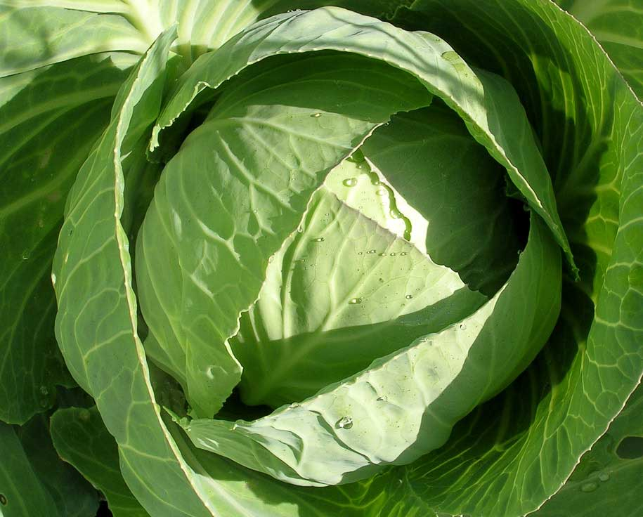
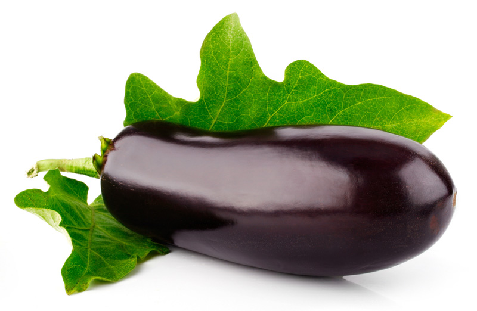
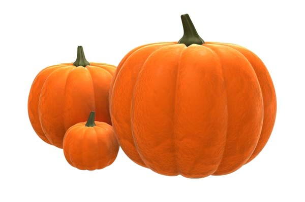

-

Свекла это двулетнее травянистое растение. В народе также называется буряк, столовая свекла и овощная. В течение первого года формируется розетка листьев и корнеплод. Форма его зависит от конкретного сорта. Она изменяется от удлиненно-конической до округло-плоской. Розетка имеет небольшое количество листьев. Листья достаточно маленькие, могут быть продолговатой или ланцетной формы. На втором году формируются цветы и плоды. Плод – тройчатые клубочки.
-

Белокочанная капуста – одна из самых старых овощных культур. Её выращивали в Древнем Египте, использовали в походах воины Александра Македонского. Древнегреческий математик и философ Пифагор высоко оценивал полезные свойства и вкус белокочанной капусты, сам занимался её разведением. В те времена насчитывалось от 3 до 10 сортов, в середине 19 века –около 30-ти, а в настоящий момент в мире насчитываются уже сотни сортов белокочанной капусты. Она выращивается во всех странах с умеренным климатом, поскольку обладает холодостойкостью, высокой урожайностью, хорошей транспортабельностью и лежкостью.
-

Морковь является одним из самых любимых и популярных корнеплодов. Упоминания о ней содержатся ещё в литературных источниках Древней Греции и Вавилонии. Считается, что культурная морковь произошла от моркови дикой, которая произрастает в Азии и Европе. В Россию она пришла практически одновременно с Европой - в XIV веке. Культурная морковь может быть двух видов: кормовой и столовой. В нашей стране её возделывают повсеместно. По площади посевов она может уступать лишь томату, капусте, луку и огурцу.
-

Кукуруза – однолетнее травянистое растение. В Европу она была завезена из Мексики. На территории России возделывается с семнадцатого века. Является древнейшим культурным растением. Не способна к одичанию и самосеву. Внешнее описание кукурузы – растение достигает высоты 3 метра. В редких случаях высота может доходить до шести метров. Кукуруза имеет хорошо развитую корневую систему.
-

Огурец – это однолетнее травянистое растение. Его сорта делятся на короткоплетистые, среднеплетистые и длинноплетистые. Стебель растения ползучий и разветвленный. Корень сильно разветвленный, стержневой. Численность и длина побегов зависят от сорта растения и условий его выращивания.
Огурцы могут быть грунтовыми и салатными. Растение пригодно для выращивания в открытом грунте. Однако оно лучше себя чувствует в теплицах и парниках. Является теплолюбивым и влаголюбивым. -

Баклажан – это травянистое двулетнее теплолюбивое растение. Его стебель плотный, прямостоячий, деревянистый. Может быть фиолетовым или зеленым. Листья очередные, лопастные или выемчатые, с жилкованием. Цветки обоеполые, собранные в кисти. Плодами являются ягоды разной формы. Их окраска колеблется от светло-лимонной до темно-фиолетовой.
-

Лук-порей относится к семейству лилейные. Родина его – побережье Средиземного моря. Эта культура была известна еще древним грекам и римлянам, она также выращивалась и на Северном побережье Африки (Египет, Карфаген, Алжир, Марокко). В России возделывают этот вид лука повсеместно, но в небольшом объеме, в основном лишь в пригородных зонах.
-

Лук считается старейшим культурным растением. Его разведением занимались народы в странах Индии, Восточной Азии, Персии и Средиземноморья. Ещё египтяне, римляне и греки использовали порей в пищу. Римляне считали его едой для богачей. Кочевники, которые открыли это растение, изначально употребляли в пищу лишь зелёные перья. И только спустя некоторое время стали кушать и луковицы.
-

Огородная петрушка – это двулетнее травянистое растение. В высоту оно может достигать до 80 см. В течение первого года образуется розетка перисто-рассеченных листьев. Во второй год формируется цветочный стебель. Цветет растение с июля по сентябрь мелкими желтыми цветами. Чаще всего огородники выращивают курчавую и листовую петрушку. Растение петрушка известно во многих климатических зонах.
-
Овощной горох – травянистое однолетнее растение. Стебель у него штамбовый или полегающий с цепляющимися усиками, имеет высоту от 20 до 200 см. Листья сложные, парноперистые. Корневая система стержневая, хорошо разветвленная, на ней развиваются клубеньковые бактерии, усваивающие атмосферный азот.
-

Болгарский перец считается старейшим овощем. У него длинная и интересная история, которая насчитывает более 9 тысяч лет. Многие века сладкий овощ выращивался в самых солнечных и теплых уголках земли. Изначально он использовался как лекарственное средство. С его помощью лечили астму, малокровие и головокружение. И лишь спустя какое-то время люди его стали использовать в пищу.
-

Многолетнее травянистое клубненосное растение, возделываемое как однолетняя культура. Представляет собой куст высотой до 1м, с 4-6, иногда 6-8 стеблями, количество которых зависит от сорта и величины посадочного клубня. Стебли голые, ребристые, погруженная в почву часть их выпускает длинные боковые отростки, называемые столонами.
-

Тыква – это однолетнее растение с мощной корневой системой. Форма плодов растения и их окраска зависят от сорта. Цвет может быть белым, серым, оранжевым. Мякоть плода рыхлая. Цветение наступает в первой половине лета, плоды созревают с конца лета и до сентября. Выращивают более 200 сортов, на территории России, Мексики, США и других стран.